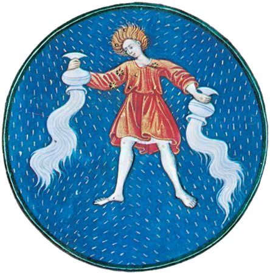

|

|
Aquarius, (Latin: “Water Bearer”) in astronomy,
zodiacal constellation lying in the southern sky
between Capricornus and Pisces, at about 22
hours right ascension and 10° south declination.
It lacks striking features, the brightest star,
Sadalmelik (Arabic for “the lucky stars of the king”),
being of magnitude 3.0. In astrology, Aquarius is the
11th sign of the zodiac, considered as governing the
period from about January 20 to about February 18.
Its representation as a man pouring a stream of water
out of a jug came about, it has been suggested, because
in ancient times the rising of Aquarius coincided in the
Middle East with a period of floods and rain.
|